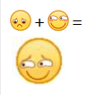

| My love |
How about you?
要说爱好，鄙人没有。不过喜欢玩的东西，那还是有一点点的。由于本人穷困潦倒，故不涉及氪金和买断游戏，也不涉及贵重玩具。
首先，毫无疑问，电子游戏排名第一。电子游戏的含金量不用多说，自然是yyds。像素游戏、横板战斗游戏、2.5d游戏、横板闯关、3d游戏、沙盒游戏、末日丧尸类游戏，本人都有所涉猎。至于操作。。。快乐最重要。
其次就是乒乓球位列第二了。啧，虽然也蒟蒻，但是那抽球的手感还是十分痛快的。不过最离谱的是体育选课没有去。
之后就是鱼龙混杂了，什么音乐、读书之类的，一个字，怎么好玩怎么来。
<完>